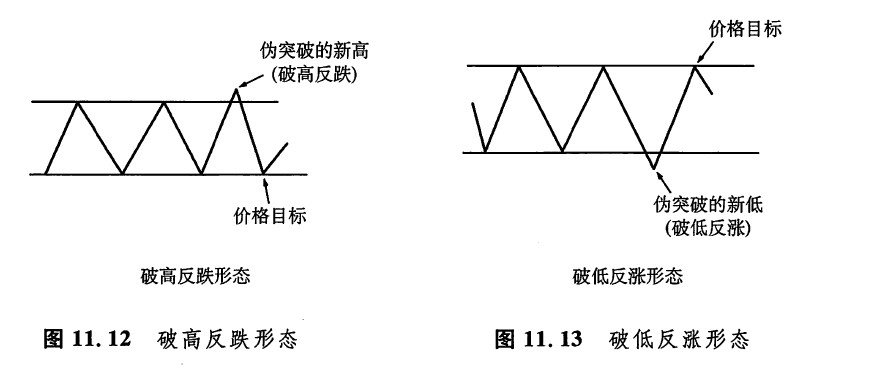
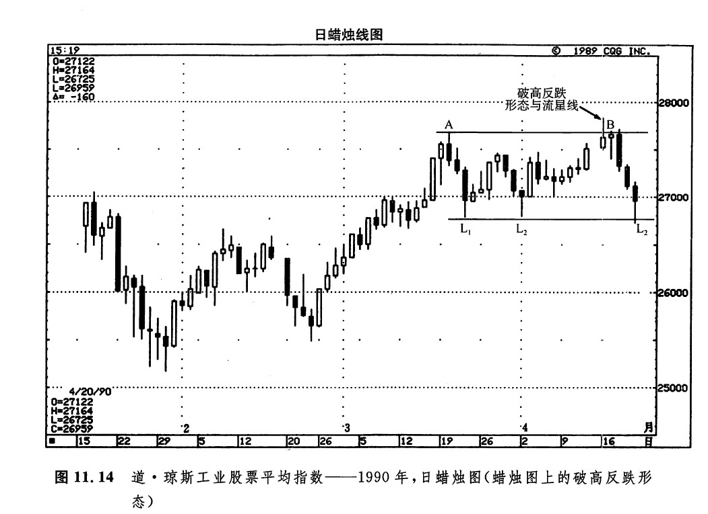
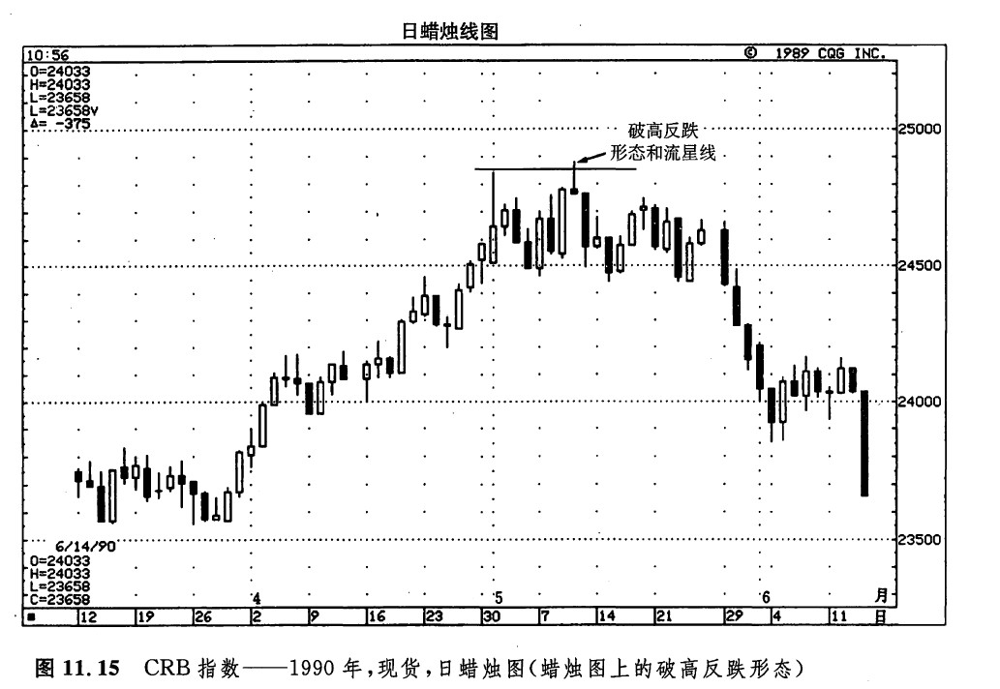
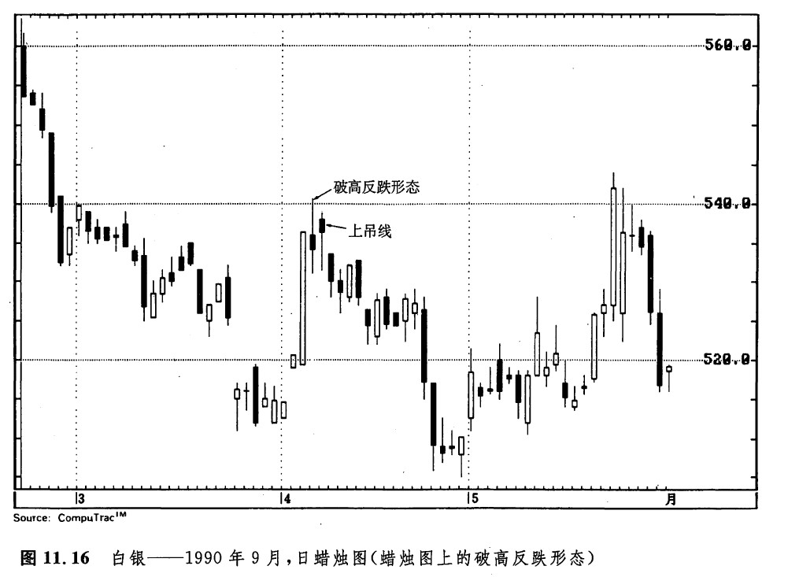
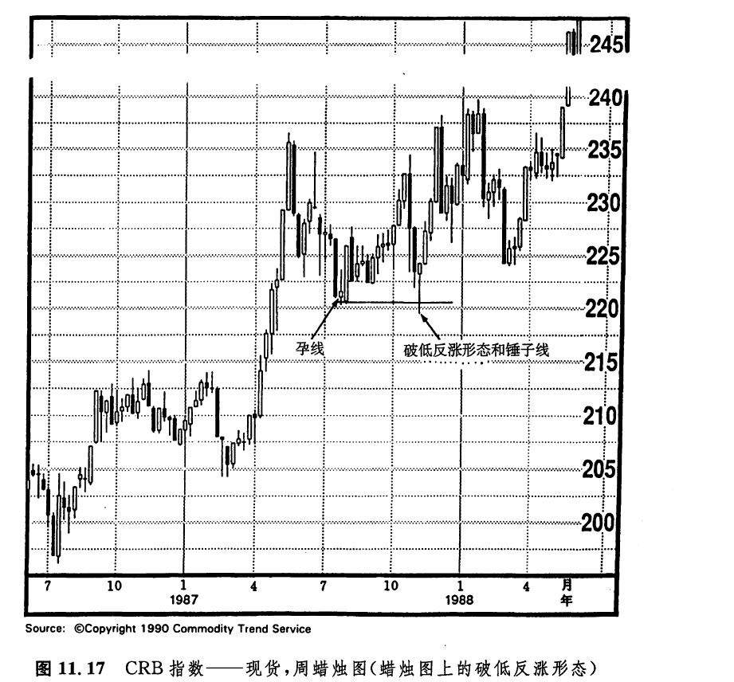
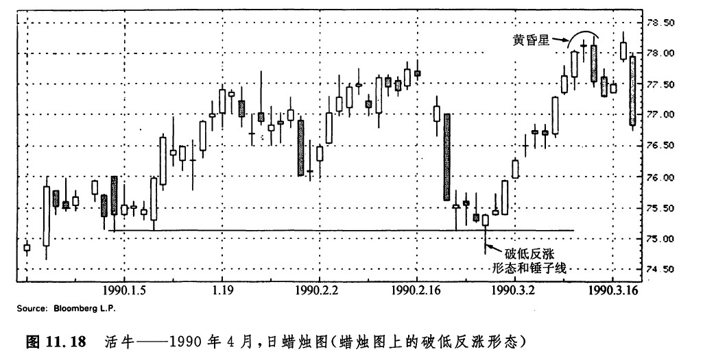
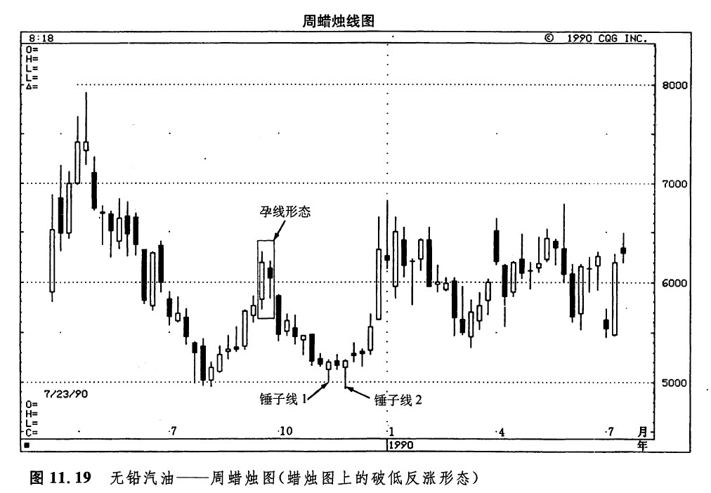
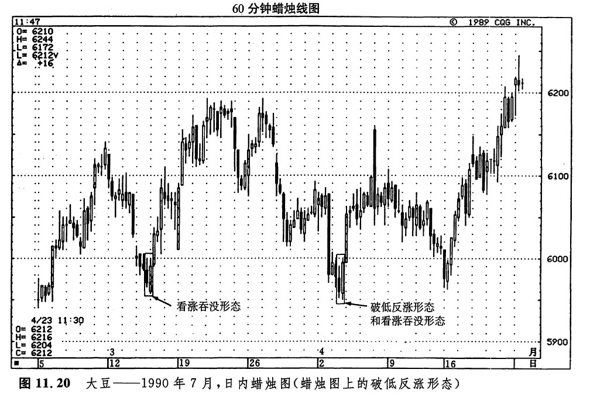
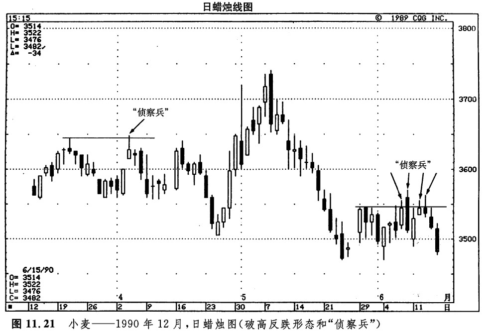

在绝大部分时间内，市场并不处于趋势状态，而是处在水平的波动区间中。在这样的情况下，市场就达到了某种相对和谐的状态，牛方和熊方相安无事、平分秋色。在日文中，用来描述安宁和平静的词是“和”。当市场处于横向的交易区间中时，我喜欢将这种状态看成一种“和”的状态。根据一份研究推测，大约有70%的时间市场是处在非趋势状态的[1]。如此一来，如果哪种工具能够在这种环境下提供有利可图的入市点，那么，这种交易工具将是极有实用价值的。事实上，针对这样的市场状况，我们有一套行之有效的技术工具。这就是所谓的“破高反跌形态”和“破低反涨形态”。如果将这两个概念应用在蜡烛图上，那么更是大有用武之地。破高反跌形态与破低反涨形态最初是根据理查德·威科夫的有关思想发展起来的，他于20世纪早期推广了这一思想。
正如前面所介绍，当市场处于“和”状态的时候，交易活动集中在一个平静的水平区间中。然而，即便在这样的水平区间中，熊方或牛方有时候也会不甘寂寞，企图冲击前一个高点或低点的水平。在这种情况下，交易机会就出现了。具体而言，如果市场向上暂时突破了某一阻挡水平，或者向下暂时突破了某一支撑水平，但又无力维持战果（也就是所谓的“伪突破”），那么，这种场合就为我们提供了一个颇有吸引力的交易良机。在这样的局面下，很可能将发生以下的价格变化：市场将从水平整理区间的这个边界回到与之相对的那个边界。
如图11.12所示，市场一度向上突破了一个阻挡水平，但无力维持这一局面，于是价格重新跌回过去的高点之下，形成了一个“伪突破”。在这样的情况下，我们应当卖出做空，并且将保护性止损指令的水平安排在当前的新高水平以上。价格目标是，市场再度向下试探这个水平整理区间的下边界。这类虚假的向上突破，就构成了所谓的“破高反跌形态”。如果在破高反跌形态的形成过程中，同时形成了某种看跌的蜡烛图指标，就实在是卖出做空的大好机会了。
同破高反跌形态相反的是破低反涨形态。在破低反涨形态中，价格起先曾经向下突破了以前的低点水平。后来，价格反弹回来，返回到曾被突破的支撑区的上方（如图11.13所示）。换句话说，这个新低水平是不能维持住的。在这种情况下，一旦价格向上推回到过去的低点水平以上，则应当买进。我们的价格目标是，市场将重新向上试探这个水平整理区间的上边界。止损指令的水平可以放置在破低反涨形态当日的最低点附近。利用破高反跌形态和破低反涨形态来进行交易是充分可行的，因为它们既提供了一个清晰的价格目标（即横向交易区间的另外一个边界），也提供了一个清晰的保护止损指令的参考水平（即“伪突破”当日所形成的新高或新低水平）。

图11.14是一个很好的实例，显示了一个蜡烛图上的破高反跌形态。A所示的这一天标志着整个水平交易区间的高点，这是一个阻挡水平（请注意它的前一天是一根上吊线，这根上吊线发出了警告信号，表明之前的上升趋势已经结束）。L1和L2所示的两个位于同一水平的低点，界定了这个水平交易区间的下边界。在B所示的这一天，出现了一个破高反跌形态。这就是说，当日市场曾经向上突破了先前A处的高点，但是这个新高水平未能维持住。在B处，牛方无力维持这个新高水平，由此构成了一个看跌的信号。另处还有一项负面的因素，B所示的这一天同时也形成了一个流星线。有时候，流星线是破高反跌形态的一个组成部分。在这种情况下，就构成了我们卖出做空的有力动机。在本实例中，似乎一个看跌的破高反跌形态加上一根流星线还不足以让牛方的脊梁骨浸透寒气，更有甚者，在B所示的日子之后，又出现了一根上吊线！通过B处的破高反跌形态，我们得出了一个价格目标，那就是该水平区间的下边界，即L1和L2所示低点的水平。

如图11.15所示，在5月1日，CRB指数向上触及248.44点，创出了当前上涨行情的新高。5月10日，牛方使尽招数，使市场一度蹭到比这个水平高25个基本价格单位的位置。但是，他们不能够维持住这一新高水平。这一次失败的尝试构成了一个破高反跌形态。同时，5月10日也是一根流星线，标志着之前小规模上升趋势的终结。于是，我们有充分的理由卖出做空，并且把相应的保护止损指令设置在5月10日最高点附近。价格目标是，市场将重新向下试探当前交易区间的下边界，即大约245.00的水平附近。

如图11.16所示，4月5日的最高点向上超过了3月初形成的高点，它位于5.40美元附近的水平。然而，牛方却未能守住这块新高地。这就形成了一个破高反跌形态。在这个破高反跌形态的次日，是一根上吊线，由此证实了这个破高反跌形态的看跌意义。如图11.17所示，1987年7月，CRB指数在220点附近建立了一个底部，是通过一个孕线形态形成的．尔后一周的长长的白色蜡烛钱对由这个孕线形态的低点进行了成功的试探。同时，这根白色蜡烛线也是一根坚挺的捉腰带线。在当年的第三季度，220.00的水平曾经被短暂地向下突破，但不久，市场剧烈地向上反弹，并且在向上反弹的过程中，产生了一根锤子线和一个破低反涨形态。根据这一破低反涨形态，这轮行情的价格目标是，市场重新向上试探先前的高点，即235点附近。


如图11.18所示，1月初的低点曾在2月下旬一度为市场向下穿破。但市场未能维持住这一新低水平，这就意味着这里形成了一个破低反涨形态。另一方面，该破低反涨形态当日也是一根锤子线。两个方面的看涨信号结合在一起，为技术分析者提供了充分的警告信号z 市场即将回头向上，重新尝试1月、2月形成的价格区间上边界，即大约位于78美元的水平。有趣的是，后来的上涨行情果然于3月中旬时在接近78美元的位置告终，其反转形态是一个十字黄昏星形态。

如图11.19所示，在图示的孕线形态出现后，市场开始下滑。后来，市场在锤子线1处恢复了稳定。同时，这根锤子线也是市场对位于0.50美元附近的旧支撑水平的成功试探。在锤子线2处，又发生了一段小规模的向上反抽行情。在这根看涨锤子线上，市场如蜻蜓点水，向下掠过位于夏天的低点之下的一个水平（比该低点低25个基本价格单位），但是熊方未能够坚守住这个新低水平。于是，形成了一个破低反涨形态，再加上一根锤子线、一个平头底部形态，汇聚成不容忽视的看涨的证据。如图11.20所示，在3月12日所在的一星期中，大豆市场向下触及了一个处于5.96美元的低点，形成了一个看涨吞没形态，然后便开始上涨。4月3日，价格曾向下跌破这个低点，创造了一个新低水平。不过，这一新低水平未能维持住，导致了图示破低反涨形态的诞生。更有甚者，这一天市场还构造了一个看涨吞没形态。


为什么破低反涨形态与破高反跌形态具有如此神奇的效用？要回答这个问题，就得谈到拿破仑的一段话。有人问他，他认为什么样的军队是最好的军队。他的回答简明扼要：“获胜的军队。”[2]我们不妨把市场看作两支部队——牛方和熊方——拼杀的战场。当市场处于水平的交易区间中时，双方拼力争夺的地盘特别明确，就是这块水平区间。其上方的水平阻挡线是熊方必守的最后防线。下方的水平支撑线是牛方必守的最后防线。
有时候，交战的一方，比如大户交易商、商业账户经理，甚至可能是自营交易商，会派出小股的“侦察兵”（这是我的说法，不是蜡烛图本来的术语），前去试探对方部队守土的决心。举例来说，牛方可能向上推一推，企图使价格上升到一条阻挡线之上。在这样的交火中，我们就得密切关注熊方表现出的坚定程度。如果牛方这支侦察部队能够在敌方的土地上安营扎寨（这就是说，在数日内，市场的收市价都处于该阻挡线的上方），那么牛方的向上突破就成功了。牛方的新生力军将要增援这支先头部队，市场就将向上运动。只要这块滩头阵地掌握在牛方的手中（就是说，市场已经把这个旧的阻挡区转化为新的支撑区，并维持其支撑作用），那么牛方的部队就会控制着市场的局势。在图11.21中，显示了这种“火力侦察兵”现象的一个实例。

在5月下旬，市场曾在3.54美元处形成了高点。后来，牛方的多支侦察部队都企图在3.54美元之上的熊方领土上抢占一块立足点。但他们仅仅能够在日内价格变化过程中，将市场暂时推升到3.54美元之上。牛方未能建立滩头阵地，也就是说，没有收市价进入熊方的势力范围。于是，牛方开始后撤。结果怎么样？市场重新回到了该水平区间的下边界，即3.45美元左右的水平。6月初，市场曾经形成过一个看跌吞没形态，这个蜡烛图信号说明，熊方依然控制着市场的动向。6月12日和13日的流星线同样也为上述景象增添了疲弱的气氛。
在本实例中，4月初也曾经发生了另一个“牛方侦察兵事件”。由于牛方未能维持在3月中旬的高点之上，他们不得不后撤。结果是，市场重新向下试探3月下旬的低点。上述失败过程也得到了一根看跌的流星线的验证。
下一篇：极性转换原则
上一篇：蜡烛线图的支撑线和阻挡线